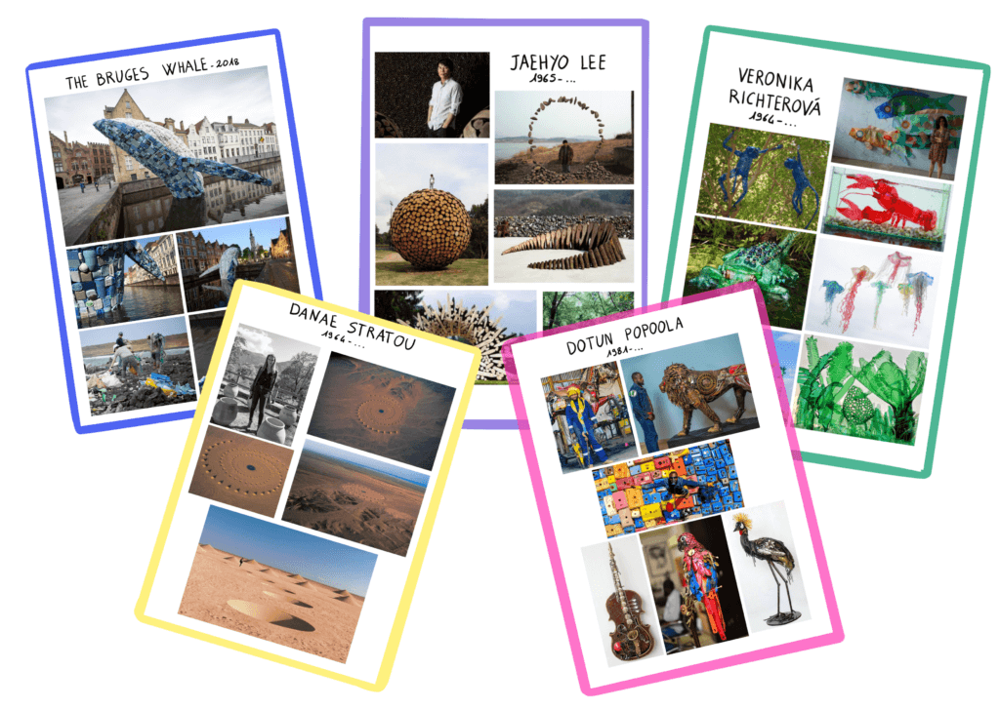

Suite à l'intervention d'une association dans notre école proposant plusieurs atelier sur le zéro déchet, j'ai décidé de proposer une séquence d'art visuel sur ce sujet à mes élèves.

J'ai donc préparé un musée du zéro déchet dans la classe (je vous explique en quoi ça consiste dans cet article) en exposant les fiches mémo de différent.es artistes faisant du land art ou de l'upcycling. Après une première phase d'observation et d'échanges, j'ai invité les élèves à classer les artistes en deux catégories de leur choix. Les matériaux naturels et les déchets sont les deux critères qui sont ressortis tout de suite, ce qui m'a permis d'introduire les notions de land art et upcycling.
Lors d'une seconde séance, j'ai distribué les définitions du land art et de l'upcycling aux élèves qui ont découpé et classé des images d'œuvres selon ces deux critères. Il s'agit de la trace écrite de cette séquence d'art visuel. En parallèle de ces deux séances nous avons entamé un travail de création sur le land art (création libre dans la cour de récréation), puis sur l'upcycling (décorations de Noël à partir des déchets rapportés de la maison).